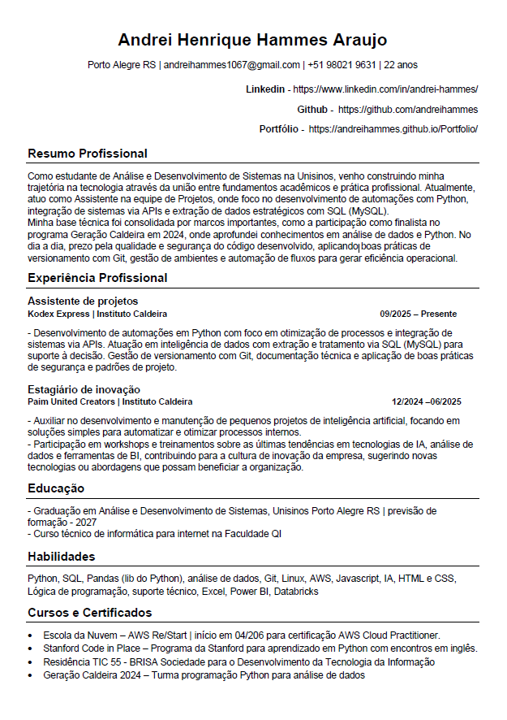

Olá, me chamo Andrei Hammes
Engenheiro de Software
Como estudante de Análise e Desenvolvimento de Sistemas na Unisinos, venho construindo minha trajetória por meio da combinação entre fundamentos acadêmicos e experiência prática em desenvolvimento de software. Atualmente, atuo como Jovem Aprendiz na equipe de Engenharia de Software da Appmax, onde aprofundo meus conhecimentos em desenvolvimento backend com PHP, arquitetura de sistemas e boas práticas de engenharia de software. Minha base técnica foi fortalecida pela participação como finalista no programa Geração Caldeira em 2024, além de experiências com automação de processos em Python, integração de sistemas via APIs e versionamento com Git. Hoje, direciono minha carreira para o desenvolvimento de software, buscando criar soluções escaláveis, seguras e de alta qualidade, sempre com foco em aprendizado contínuo e evolução profissional.
Confira minha jornada no geração caldeiraSkills
- PHP
- Python
- Javascript
- SQL
- Inteligência Artificial
- HTML
- CSS
- Linux
- Versionamento de código com Git
- Inglês Avançado
Currículo
Você pode visualizar e baixar meu currículo clicando na miniatura abaixo 👀

Educação
- Graduando em análise e desenvolvimento de sistemas - Unisinos
- Curso técnico de informática para internet completo - QI Faculdade e escola técnica
- Curso de desenvolvimento Python - Senac Tech RS
Experiências
Aprendiz em Engenharia de Software - Appmax | 07/2026 - atualmente
Assistente de projetos e qualidade - Kodex Express | 09/2025 - 06/2026
Desenvolvimento e automações: Criação de automações e ferramentas utilizando Python, aplicando padrões de projeto e boas práticas de desenvolvimento. Prezo pela organização do código através do isolamento de ambientes virtuais, gestão rigorosa de dependências e proteção de dados sensíveis e credenciais.
Integração via APIs: Implementação de conexões e consumo de APIs para garantir a comunicação fluida entre diferentes serviços e sistemas, permitindo a sincronização de dados e a automação de fluxos ponta a ponta.
Inteligência de dados (SQL): Elaboração de queries em MySQL para extração, tratamento e análise de grandes volumes de dados, transformando informações em relatórios.
Versionamento e colaboração: Gestão de repositórios via Git, garantindo o controle de versão e a colaboração eficiente com a equipe. Participo de todas as etapas do projeto, desde o levantamento de requisitos até a documentação técnica e manutenção.
Estagiário de Inovação - Paim United Creators | 12/2024 - 06/2025
Auxiliar no desenvolvimento e manutenção de pequenos projetos de inteligência artificial, focando em soluções simples para automatizar e otimizar processos internos.
Participação em workshops e treinamentos sobre as últimas tendências em tecnologias de IA, análise de dados e ferramentas de BI, contribuindo para a cultura de inovação da empresa, sugerindo novas tecnologias ou abordagens que possam beneficiar a organização. Colaboração com equipes multidisciplinares para entender os requisitos do negócio e desenvolver soluções inovadoras.
Catalogador de idiomas - Klassmatt | 09/2023 - 04/2024
Responsável por filtrar e catalogar materiais em uma Big Data, atuando diretamente no saneamento e na governança de dados.
Contato
Telefone: +55 (51) 98021-9631
E-mail: Me mande um email
LinkedIn: Visite meu LinkedIn
Github: Meu Github